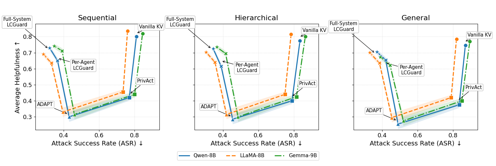

Why it matters왜 중요한가
Latent communication makes multi-agent LLMs fast — and quietly turns their shared memory into a wiretap.
잠재 통신은 멀티에이전트 LLM을 빠르게 만들지만, 그들의 공유 메모리를 조용히 도청선으로 바꿔 놓는다.
The newest multi-agent systems (LatentMAS, KVComm) stop serializing thoughts into words and instead pass one agent's key-value cache straight into the next. It works: no re-tokenizing, no re-decoding, a ~4× speedup and richer signal. But a KV cache is not a neutral summary — it is a dense, high-dimensional imprint of everything the agent read, including a user's private context or a confidential document. Prior safety work guards the outputs agents emit; nobody guarded the representations they trade. LCGuard's first contribution is to name this as an attack surface and make it measurable: a cache is "unsafe" if a trained decoder can reverse it back into the sensitive input. Its second is a cheap fix that keeps the speed.
최신 멀티에이전트 시스템(LatentMAS, KVComm)은 생각을 단어로 직렬화하지 않고, 한 에이전트의 키-값(KV) 캐시를 다음 에이전트에 그대로 넘긴다. 효과는 확실하다 — 재토큰화·재디코딩이 없어 약 4배 빠르고 신호도 풍부하다. 그러나 KV 캐시는 중립적 요약이 아니라, 사용자의 사적 맥락이나 기밀 문서를 포함해 에이전트가 읽은 모든 것을 밀도 높게 새겨 넣은 흔적이다. 기존 안전 연구는 에이전트가 내놓는 출력을 지켰을 뿐, 그들이 주고받는 내부 표현은 아무도 지키지 않았다. LCGuard의 첫 기여는 이를 공격 표면으로 명명하고 측정 가능하게 만든 것이다 — 학습된 디코더가 캐시를 사적 입력으로 되돌릴 수 있다면 그 캐시는 "안전하지 않다". 둘째 기여는 속도를 지키는 값싼 해법이다.

By the numbers핵심 숫자
Head-to-head: privacy vs. utility정면 비교: 프라이버시 vs 유용성
| Method | Privacy ↑ | Helpful. ↑ | ASR ↓ |
|---|---|---|---|
| Vanilla KV (LatentMAS) | 0.420 | 0.780 | 0.871 |
| PrivAct (output filter) | 0.820 | 0.612 | 0.845 |
| ADAPT (DP noise) | 0.850 | 0.285 | 0.332 |
| LCGuard · Per-Agent | 0.773 | 0.650 | 0.259 |
| LCGuard · Full-System | 0.801 | 0.710 | 0.216 |
Read the extremes: Vanilla KV keeps utility but is wide open (ASR 0.871); ADAPT slams the attack shut (0.332) but destroys helpfulness (0.285 — worse than useless). LCGuard is the only row that is simultaneously private and useful — and it does so at the representation level, which is why output-filtering PrivAct fails to move ASR at all.
양극단을 보라: Vanilla KV는 유용성은 지키지만 완전 무방비(ASR 0.871)이고, ADAPT는 공격은 막지만(0.332) 유용성을 파괴한다(0.285 — 쓸모없음). LCGuard는 프라이버시와 유용성을 동시에 만족하는 유일한 행이다. 이는 표현(representation) 수준에서 이뤄지기에, 출력만 거르는 PrivAct가 ASR을 전혀 못 낮추는 이유이기도 하다.
In one diagram한 장의 그림
The core idea핵심 아이디어
KV caches are a covert channel
Shared caches form a high-bandwidth, opaque path in representation space. Unlike inspectable text, they implicitly carry the inputs, so an adversary who observes the channel can train a decoder to read private content back out — no decoding by the model required.
공유 캐시는 표현 공간의 고대역·불투명 통로를 이룬다. 검사 가능한 텍스트와 달리 입력을 암묵적으로 실어 나르므로, 채널을 관찰하는 공격자는 디코더를 학습시켜 사적 내용을 되읽을 수 있다 — 모델의 명시적 디코딩 없이도.
A residual-bottleneck sanitizer
Each g applies a lightweight residual transform to K and V, squeezing them through a dk/4 bottleneck. The residual connection preserves task-relevant semantics; the narrow bottleneck strips fine-grained, identity-revealing detail before the cache leaves the agent.
각 g는 K와 V에 가벼운 잔차 변환을 적용해 dk/4 병목으로 압착한다. 잔차 연결은 과제 관련 의미를 보존하고, 좁은 병목은 캐시가 에이전트를 떠나기 전에 신원을 드러내는 세부를 벗겨낸다.
Adversarial minimax
Defender (the g functions) and attacker (reconstruction decoders) play a min–max game: minϕ maxψ β·Σ Lrec + Ltask. Alternating updates push toward caches that are useful for the task yet minimally informative about the secret; β sets the trade-off.
방어자(g 함수)와 공격자(복원 디코더)가 미니맥스 게임을 한다: minϕ maxψ β·Σ Lrec + Ltask. 교대 업데이트는 과제엔 유용하되 비밀엔 최소한만 알려주는 캐시로 밀어붙이며, β가 절충점을 정한다.
System-level, not per-link
Leakage isn't confined to one edge — it aggregates and re-emerges across multi-hop paths. Full-System LCGuard jointly optimizes every communication function, and it beats the Per-Agent variant precisely for agents deeper in the pipeline where compositional leakage accumulates.
누수는 한 간선에 갇히지 않고 여러 홉을 거쳐 누적·재출현한다. Full-System LCGuard는 모든 통신 함수를 함께 최적화하며, 조합적 누수가 쌓이는 파이프라인 후반 에이전트에서 Per-Agent 변형을 정확히 앞선다.
How it works어떻게 작동하나
- Threat model. 위협 모델. Each agent holds a task input xi and a private input si, emits a KV cache, and communicates only in latent space as mij=g(Ki,Vi). The adversary observes a subset of channel artifacts.각 에이전트는 과제 입력 xi와 사적 입력 si를 갖고 KV 캐시를 생성하며, 잠재 공간에서만 mij=g(Ki,Vi)로 통신한다. 공격자는 채널 산출물의 일부를 관찰한다.
- Sanitize. 정화. g adds a low-dimensional residual bottleneck to K and V — keep the task signal in the residual, choke identity through the narrow path.g는 K·V에 저차원 잔차 병목을 더한다 — 과제 신호는 잔차에 남기고, 신원은 좁은 경로로 조인다.
- Attack. 공격. An adversarial decoder D is trained to reconstruct si from the observed (already-sanitized) caches; reconstruction loss is the operational measure of leakage.적대적 디코더 D가 관찰된(이미 정화된) 캐시에서 si를 복원하도록 학습된다. 복원 손실이 누수의 실질 척도다.
- Minimax. 미니맥스. Alternate: sharpen the attacker to reconstruct better, then update g to raise the attacker's reconstruction loss while keeping task loss low.교대: 공격자를 더 날카롭게 만들고, 이어 g를 갱신해 과제 손실은 낮게 유지하면서 공격자의 복원 손실을 키운다.
- Deploy. 배포. At inference, agents exchange sanitized caches. Full-System trains all g together so the defense holds across the whole communication graph, not just one edge.추론 시 에이전트들은 정화된 캐시를 교환한다. Full-System은 모든 g를 함께 학습해, 한 간선이 아니라 통신 그래프 전체에서 방어가 유지되게 한다.
What to take away그래서, 가져갈 것
You can keep latent communication's speed and most of its utility while removing roughly three-quarters of the reconstruction risk — privacy doesn't force a retreat back to text.
잠재 통신의 속도와 유용성 대부분을 유지하면서도 복원 위험을 약 3/4 제거할 수 있다 — 프라이버시를 위해 텍스트로 후퇴할 필요가 없다.
Sharing hidden states is itself an attack surface. Output-level guardrails (PrivAct) barely move ASR (0.845) — the leak lives in the representation, not in the words.
은닉 상태를 공유하는 것 자체가 공격 표면이다. 출력 수준 가드레일(PrivAct)은 ASR을 거의 못 낮춘다(0.845) — 누수는 단어가 아니라 표현에 있다.
Privacy is a system property: Full-System beats Per-Agent because leakage aggregates and re-emerges across agents — a per-link patch leaves compositional holes.
프라이버시는 시스템 속성이다: 누수가 에이전트를 거쳐 누적·재출현하기에 Full-System이 Per-Agent를 앞선다 — 간선별 땜질은 조합적 구멍을 남긴다.